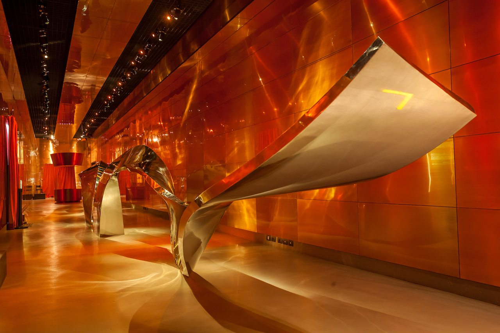

Belo Horizonte is a historic and cultural capital of Brazil

Belo Horizonte Travel Guide
Belo Horizonte is Brazil’s sixth-largest city and the capital of the state of Minas Gerais. This well-planned city has sprawling tree-lined boulevards and ample green space to enjoy. The surrounding area is full of colonial historical sites and other great destinations, such as Ouro Preto. If you are into nature, history, art, or nightlife, Belo Horizonte is a great destination to include on your next trip to Brazil.
I came to Belo Horizonte to visit my friend Lilian and her now husband, Glauco. I knew Lilian from my Rotary Youth Exchange year in Germany. Lilian and her family would later host me for 6-weeks while I explored Belo Horizonte and the surrounding area. It came to feel like home fairly quickly. In this Belo Horizonte Travel Guide, I will recount the highlights of my favorite places in the city.
This post was written with support from Embratur, which is part of the Brazilian Ministry of Tourism and which operates VisitBrasil.com. They have supplied me with images and marketing support. All views expressed are solely my own and based on my personal experiences and independent research.
In A Nutshell
Highlights - Panoramic views, art, culture, music, a wide verity of classical and modern architecture, and proximity to many other amazing destinations off the typical tourist path.
Lowlights - Located far from other major tourist centers make getting here a a bit hard unless you fly.
Bottom line - Belo Horizonte is a beautiful city with lots to offer. Despite being far from other popular destinations, there is plenty to explore in the immediate area which would be enough to make any trip to Brazil a success all by its self.
Praça da Liberdade (Freedom Square)
In the center of Belo Horizonte’s original planned city stands a number of historic sites and buildings, but none as beautiful as Praça da Liberdade. The square is full of neck bending palm trees and other flora which have been magnificently manicured for over a century. On the surface are charming cobblestone paths and lots of seating.
It is easy to see the inspirations this square takes from the grounds at the Palace of Versailles. Taking a short breather here or staying few hours to enjoy the nature and read a book will be time well-spent if you are looking to relax.
The square is surrounded by a number of historic buildings, including the old governor’s mansion and an apartment building designed by Oscar Niemeyer, a founder of modern architecture. So regardless of what aesthetic you are looking for, you can find nature, history, and modernity all within one view from the Praça da Liberdade.
The area around the square is designated as a cultural center called Circuito Cultural Praça da Liberdade (The Cultural Circuit of Freedom Square). This zone recognizes the historical significance of the space and the buildings which shaped Brazil’s history for more than a century. In this area, there are more than a dozen institutions, museums, and cultural centers.
.") Belo Horizonte, Brasil, Minas Gerais, Praça da liberdade. Courtesy Embratur Image Bank.
Belo Horizonte, Brasil, Minas Gerais, Praça da liberdade. Courtesy Embratur Image Bank.
The Seat of Government
At the southern end of Freedom Park is the Palácio da Liberdade. This is the original state capital of Minas Gerais and is fashioned after European palaces. Though not as large as palaces you can find in Europe, if you take a tour of the inside, you will be blown away by the neoclassical architecture and paintings.
Today the Palácio da Liberdade acts as a tourist attraction and is only put into official service during the transfer of power ceremonies between elected officials.
.") Belo Horizonte, Brasil, Minas Gerais, Palácio da Liberdade. Courtesy Embratur Image Bank.
Belo Horizonte, Brasil, Minas Gerais, Palácio da Liberdade. Courtesy Embratur Image Bank.
Museums reflect the rich history of Minas Gerais
The name of the state Belo Horizonte is in is Minas Gerais, which translates to “the managed mines.” The region is rich in natural resources and was once Brazil’s greatest source of domestic wealth. The original state capital, Ouro Preto, is named for the black gold which brought wealth to the area in colonial times.
The history of Brazil is fueled by gold, and that gold came from this area of Brazil. Therefore, it is well worth taking the time to explore the museums which covers this topic.
Further Reading: Ouro Preto Brazil is the heart of Brazil, Revolution, and an economic explosion
There are many museums in Belo Horizonte, but perhaps the most unique is the Museu do metal. This museum tells the history of metal in Brazil. The precious ores have been at the heart of Brazil’s economic success, and their ability to be among the world’s emerging superpowers. The museum is a modern structure with breathtaking architecture, play on light, reflection, and metal of every shape, size, and color.
 Belo Horizonte, Brasil, Minas Gerais, Museu do metal. Courtesy Embratur Image Bank.
Arts, crafts, and rainbows make a splash
On a hot summer day in Belo Horizonte, you will find the streets lined with artisans selling handy crafts typical of the area. So renowned are these artistic goods that there is a museum dedicated to showcasing the hand crafted art of the region. The Palácio de artes e ofícios (Handy Craft Museum) is a great place to cool down and escape the mid-day sun.
Even if you don’t go in the museum, you can find artisans in the plaza out front and cool down with a dance in the water fountains. It is also a great place to catch a rainbow on a cloudless day!
.") Belo Horizonte, Brasil, Minas Gerais, Palácio de artes e ofícios. Courtesy Embratur Image Bank.
Belo Horizonte, Brasil, Minas Gerais, Palácio de artes e ofícios. Courtesy Embratur Image Bank.
Panoramic City Views
Belo Horizonte is built in a hilly area, which provides ample locations to take in breathtaking panoramic views of the modern city. I spent many evenings watching the sunset from these viewing points and I can’t recommend it to you enough. There is something magical about Brazilian sunsets!
Here are two places I can recommend for catching the panoramic view of Belo Horizonte:
-
Porcão BH Avenida Raja Gabaglia, 2985, Cep:30350-540, Tel: (31) 3293-8604. This is a very famous steak house in Belo Horizonte and it is a bit pricey as well. But the price tag comes with a real value when you watch the transition from day to dusk to night. Pro Tip: check the events calendar on their Facebook page for live performances by local artists in Belo Horizonte.
-
Alta Vila Tower - Located in the district of Nova Lima on the south side of Belo Horizonte, this tower offers a spectacular view of Belo Horizonte and its surrounding mountains but without the hefty price tag of Porcão BH. If you get hungry then you are in luck, because on the first floor is the Belo Horizonte Hard Rock Cafe!
.") Belo Horizonte, Brasil, Minas Gerais, Panorâmica. Courtesy Embratur Image Bank.
Belo Horizonte, Brasil, Minas Gerais, Panorâmica. Courtesy Embratur Image Bank.
How to get more information about Belo Horizonte
There is a wealth of additional information about Belo Horizonte on VisitBrasil.com. If you are planning a trip to the area, I encourage you to visit that resource. Also, do please leave me a comment below with questions or comments from your own experiences in Belo Horizonte. I wish you a wonderful time in this great city of Brazil!